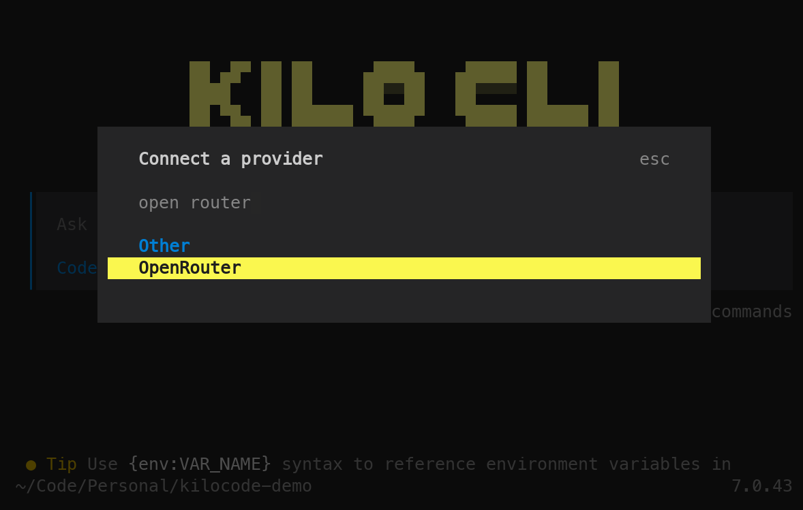
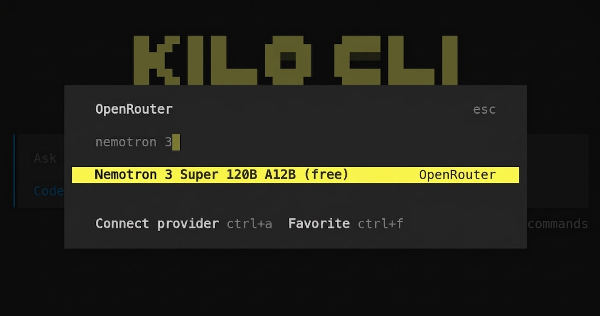
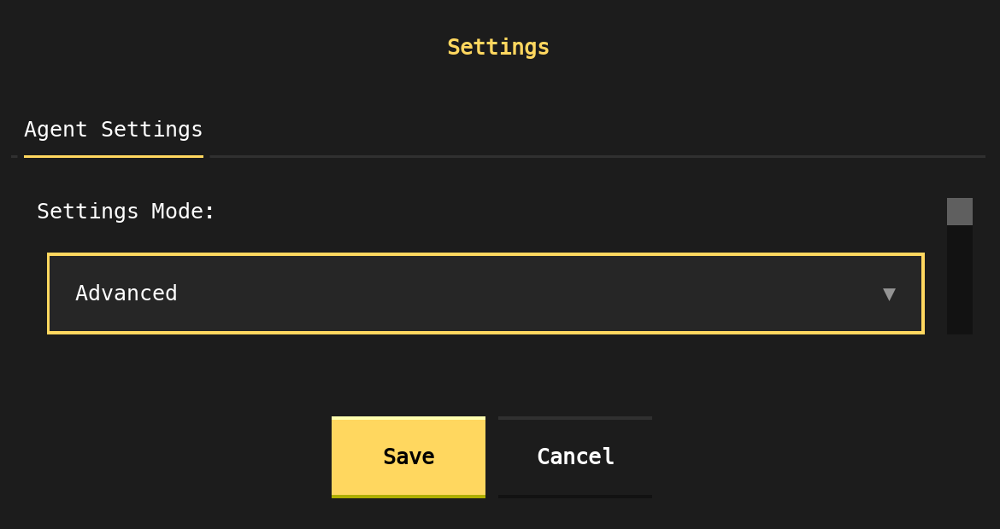
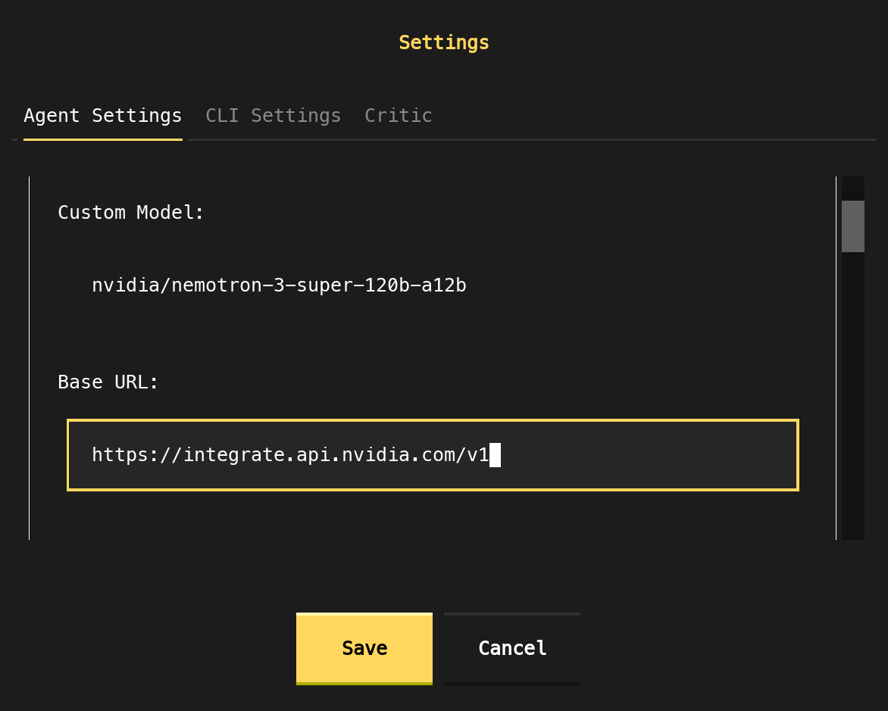
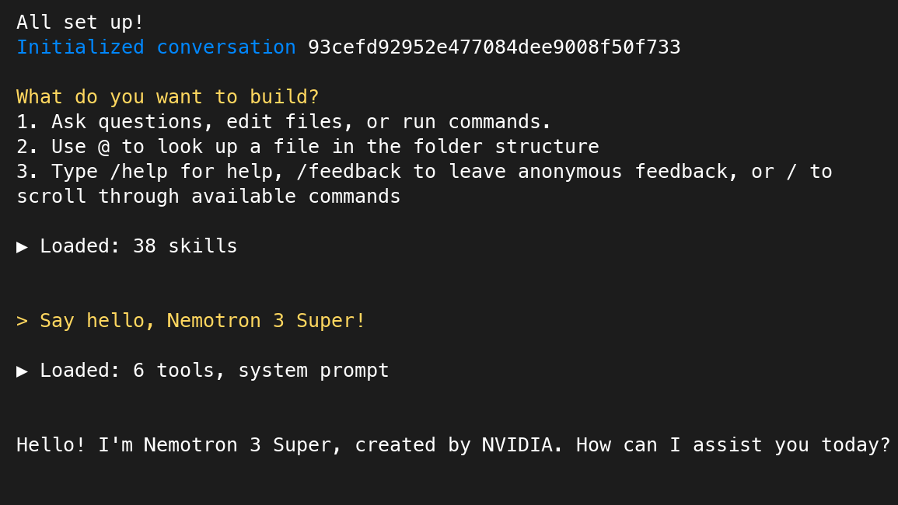

Nemotron 3 Super with Agentic Coding Tools#
Nemotron 3 Super is a 120B total / 12B active-parameter hybrid Mamba-Transformer MoE model built for agentic reasoning. This guide covers using it with OpenCode, OpenClaw, Kilo Code CLI and OpenHands CLI via OpenRouter and build.nvidia.com
Why Nemotron 3 Super for Agentic Coding#
The core bottleneck in agentic coding workflows is not raw benchmark accuracy — it is consistent, reliable behavior across many sequential steps. Two failure modes dominate: goal drift (the agent loses alignment with the original task as context accumulates) and tool-call failures (malformed or hallucinated function calls that break the execution loop).
Nemotron 3 Super addresses both directly:
1M-token native context window. Super’s Mamba-2 backbone uses linear-time sequence processing, keeping the full working context live without forced truncation across long agentic sessions.
Multi-token prediction (MTP) with shared-weight heads. Built-in speculative decoding delivers 2–3x wall-clock speedup on structured generation like code and tool calls — no separate draft model required.
Latent MoE. Token compression before expert routing enables 4x as many specialists for the same inference cost, improving consistency across the mixed task types common in agentic sessions.
Multi-environment RL alignment. Post-trained across 15 environments in NeMo Gym covering multi-step tool use, code execution, and structured output — the same operations agentic tools run in their inner loops.
Benchmark Performance#
On PinchBench - a new benchmark for determining how well LLM models perform as the brain of an OpenClaw agent - Nemotron 3 Super scores 85.6% across the full test suite, making it the best open model in its class.
On SWE-Bench Verified we have the following scores while leveraging Nemotron 3 Super in the following Agent harnesses:
Agent |
SWE-Bench Verified (%) |
|---|---|
OpenHands |
60.47% |
OpenCode |
59.20% |
Setup#
With the exception of OpenHands, all tools are configured to use Nemotron 3 Super via OpenRouter (nvidia/nemotron-3-super-120b-a12b:free). You will need an OpenRouter account and API key with access to that model before proceeding.
export OPENROUTER_API_KEY="sk-or-..."
OpenCode#
OpenCode is an open-source terminal coding agent. Configure it via ~/.config/opencode/opencode.json.
Install
npm install -g opencode-ai
Configure
{
"$schema": "https://opencode.ai/config.json",
"model": "openrouter/nvidia-nemotron-3-super",
"provider": {
"openrouter": {
"npm": "@ai-sdk/openai-compatible",
"name": "OpenRouter",
"options": {
"baseURL": "https://openrouter.ai/api/v1",
"apiKey": "{env:OPENROUTER_API_KEY}"
},
"models": {
"nvidia-nemotron-3-super": {
"name": "nvidia/nemotron-3-super",
"limit": {
"context": 1000000,
"output": 32768
}
}
}
}
},
"agent": {
"build": {
"temperature": 1.0,
"top_p": 0.95,
"max_tokens": 32000
},
"plan": {
"temperature": 1.0,
"top_p": 0.95,
"max_tokens": 32000
}
}
}
Run
cd /path/to/project
opencode
/init # first run: analyzes the project and creates AGENTS.md
OpenClaw#
OpenClaw is a daemon-based autonomous agent that runs 24/7, connecting to WhatsApp, Telegram, Slack, Discord, and 50+ other services via a persistent heartbeat loop.
Install
Requires Node.js >= 22.
npm install -g openclaw@latest
openclaw onboard --install-daemon \
--auth-choice apiKey \
--token-provider openrouter \
--token "$OPENROUTER_API_KEY"
--install-daemon registers OpenClaw as a background service that survives terminal sessions and reboots.
Configure
Edit ~/.openclaw/openclaw.json. OpenClaw model refs use openrouter/<provider>/<model> format:
{
"agents": {
"defaults": {
"model": {
"primary": "openrouter/nvidia/nemotron-3-super"
}
}
}
}
Verify and run
openclaw doctor # surfaces config issues
openclaw status # confirms the gateway is running
openclaw tui # launch the terminal UI
Once a messaging channel is paired (e.g. Telegram via /connect), the agent is reachable remotely without opening the TUI.
Kilo Code CLI#
The Kilo Code CLI uses the same underlying technology that powers the IDE extensions, so you can expect the same workflow to handle agentic coding tasks from start to finish.
Install
npm install -g @kilocode/cli
Selecting Nemotron 3 Super Model
First, we launch the Kilo Code tool:
kilo
Next, type /connect and you can search for “OpenRouter”.

After that - simply search for “Nemotron 3 Super”.

You’re now ready to get coding with Nemotron 3 Super!
OpenHands#
OpenHands CLI is a CLI tool that allows you to interact with the OpenHands AI Agent.
Install
uv tool install openhands --python 3.12
Selecting Custom build.nvidia.com Model
First, we launch the OpenHands tool:
openhands
Next, type /settings to open the settings window and select “Advanced” from the dropdown.

Then, you will enter the model and base URL as shown below:
nvidia/nemotron-3-super-120b-a12b for Custom Model, and https://integrate.api.nvidia.com/v1 for Base URL.

After that - click Save, restart your session, and you’re good to get started!
